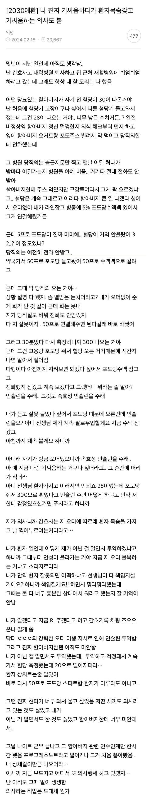

간호사랑 기싸움하려고 환자 죽이려고 한 의사 썰.jpg
댓글
주작글이라는 반박에 꼬라지라 하는거보니 어리석은 중생들 선동한번 개쉽네
어 잘했어 1시간마다 2번 체크해서 노티줘
저걸 저렇게 따라야하는거임? 사실상 목숨을 직접 거두라고 지시하는꼴아니냐
실력이 없는데 에고가 강한 의사들은 피해야 함..
주작가능성 높긴한데 bst 30 나와도 의식 멀쩡한 사람들 있긴 하드라 재활병원 같은곳은 당직의 자리 비우는 경우도 종종 있고 ㅋㅋ
20이면 시신 아니냐
지나가던 수의산데 읽어보니까 당직의만 이상한 게 아니라 둘 다 이상함.
혈당 28인데 할아버지 정신이 멀쩡했다며. 그럼 채혈이 잘못된 거 아닌가부터 의심했어야지. 혈당기만 바꿀 게 아니라 정맥혈 뽑아서 검사실에 보냈어야 했고.
5% 포도당은 저혈당에 거의 효과 없어. 그리고 50%를 얼마나 빨리 넣었는지가 글에 하나도 없네. 대충 계산하면 30분에 80mL 정도 들어가야 300까지 올라. 클램프 활짝 열어놨으면 가능한 수치야. 천천히 넣었는데 300이면 수액 달린 팔에서 쟀을 가능성이 커. 50%를 백으로 계속 달아놓는 것도 원래 하면 안 되는 거고.
수액 갑자기 잠근 것도 문제야. 고농도 포도당 확 끊으면 혈당이 반동으로 떨어져. 20까지 떨어진 게 인슐린 탓만은 아니라는 거지. 300 나왔으면 10%로 바꾸고 자주 다시 재면 되는 거였어.
당직의 인슐린 오더는 그냥 틀린 거 맞아. 근데 틀린 거 알면서 준 것도 간호사 책임이야. 차팅에 오더 때문에 줬다고 길게 써봐야 책임이 없어지지 않아. 그럴 땐 거부하고 수간이나 윗선에 올렸어야 했음.
결론은 당직의가 노답인 건 맞는데, 간호사도 잘한 건 아니라는 거.
당직의 잘못한 거
전화를 안 받음. 혈당 30인데 간호사 혼자 판단하게 만듦
50% 연결하라고만 하고 몇 mL를 어떤 속도로 넣을지, 언제 다시 잴지 말 안 함
포도당 넣어서 잠깐 오른 300 보고 인슐린 준거도 잘못했고 그거 간호사가 이상하다고 하니까 기싸움 쳐함
원래 이렇게 했어야 함
정맥혈 뽑아서 검사실 혈당 확인하고, 복용약이랑 인슐린 기록부터 확인
50% 포도당은 50mL 한 번에 넣고 10%로 이어서 달기
15~30분마다 혈당 다시 재기
300 나오면 인슐린 말고 수액 속도 줄이거나 10%로 바꾸기
긴 인슐린이나 설포닐우레아가 원인이면 하루 넘게 포도당 달고 지켜보기
그래도 계속 떨어지면 옥트레오타이드 쓰거나 큰 병원으로 보내기
이거지 뭐.
의료쪽 전문가 아닌 내가봐도 "전화안받음" 여기서 끝임.
귀순자 노크사건으로 치면 별이 떨어진다에 해당한다는 결과가 나와야지.
미칭놈이네
간호사가 판단 멋대로 한게 꼬우면 연락을 쳐 받을것이지 왜 뒤늦게 와서 지랄인지
진짜 씨팔 의사들 병원에선 지들 말 안들을 사람들이 없으니까 거의 스스로를 천룡인 정도로 생각함
의사 판단이 맞는거임??
내가 지식이 없어서
뭐 대학병원 퇴사한 간호사면 아마 연차 낮을거고 재활병원에다 야간 당직의라는 점까지 고려하면 뭐,, 다 떠나서 전화 존나안받고 중요햔 일도 연락하면 짜증내는건 명명백백한 팩트임,,
여시년 주작 소설 꺼지세요~~
요양병원 재활병원 이런곳에 의사들중에 간혹 진짜 이상한 의사 있음
어떤 의료사망사고 낸 의사는 교도소 출소후에 요양병원 가서 일하던데 역시 의사면허는 천룡인이라 느꼈음
의사도 다 사람이 하는 거고. 세상에 이상한 놈들이 워낙 많으니까 저런 의사도 있겠지. 지 자존심 때문에 거사를 그르치는 스타일
이글이 주작일수도 실화였을수도 있지만 댓글 꼬라지 보니까 의사들 사고방식 꼬라지가 어떤지는 알겠다